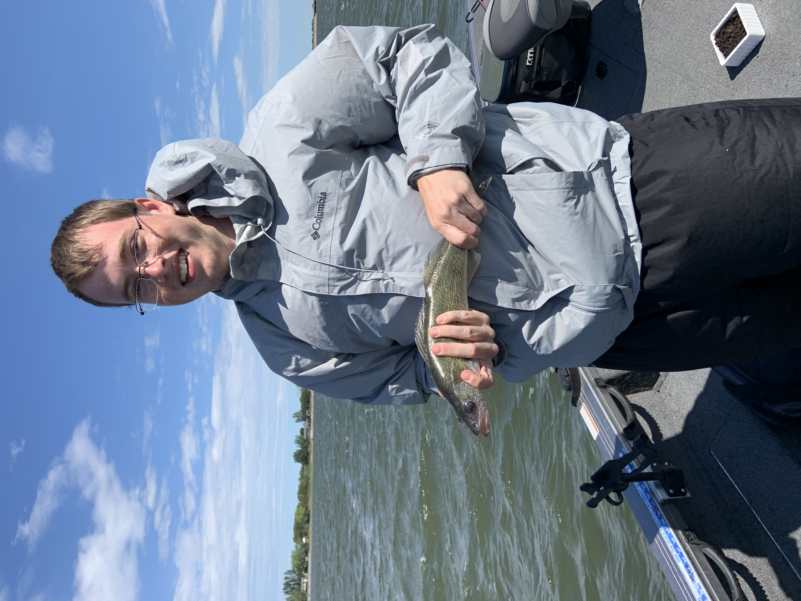

ABOUT ME
Currently, I'm a senior at Rose-Hulman Institute of Technology graduating in May 2022, majoring in computer science, and minoring in Japanese, music, and psychology. I'm experienced in a variety of programming languages including Java, Python, C, C++, SQL, HTML, CSS, and Javascript.
I have ample experience in object-oriented programming through my education and the projects I've completed. You can view the source code for these projects and learn more about them through demos and pictures of them in action from my project page. One of the projects I'm most proud of is a video game I've been working on recently. It isn't finished yet, but you can play a demo that shows some basic mechanics on my projects page
In my free time, I enjoy running, playing piano, fishing, and (as you might have already guessed) playing video games. For the past four years in college I've worked as a manager for the Rose-Hulman men's basketball team. I'm also a part of the Rose-Hulman jazz band where I play tenor saxophone. I have a wide range of hobbies and love learning anything I can about the variety of subjects I'm interested in. I've been planning on studying abroad in Japan at University of Aizu for a few years now, but haven't been able to go due to Japan's borders being closed. If everything goes well, I'll be studying abroad there this Spring in 2022.
If you have any questions or want to get in touch, feel free to email me at stapler@rose-hulman.edu
I promise I've caught more impressive fish than this, this is just the only recent picture I could find.